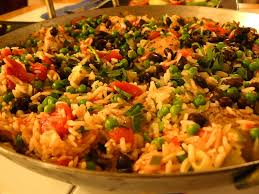

Arroz con Pollo

Introduction
Arroz con pollo is a classic Latin American and Spanish dish made by cooking chicken and rice together in one pot with aromatics, vegetables, and spices. The rice absorbs the chicken’s juices and seasonings as it cooks, creating a flavorful, savory dish often colored with ingredients like saffron, annatto, or turmeric. Variations may include peppers, peas, tomatoes, or olives, depending on the region.
Ingredients
- 4 chicken thighs
- 2 cups rice
- 1 onion, chopped
- 2 cloves garlic, minced
- 1 red bell pepper, chopped
- 1 cup peas
- 400 ml chicken broth
- 2 tbsp olive oil
- 1 tsp paprika
- Salt and pepper to taste
Steps
- Heat olive oil in a large pot and brown the chicken on all sides. Remove and set aside.
- Sauté the onion, garlic, and bell pepper in the same pot until softened.
- Add the rice and stir for 1–2 minutes.
- Pour in the chicken broth and add paprika, salt, and pepper.
- Return the chicken to the pot and bring to a boil.
- Reduce heat, cover, and simmer for 20 minutes.
- Add the peas during the last 5 minutes of cooking.
- Cook until the rice is tender and the chicken is fully cooked.
- Let rest for a few minutes before serving.
Outro
Arroz con pollo is a vibrant and hearty dish that brings together tender chicken, seasoned rice, and vegetables in one flavorful pot. Once the rice is fluffy and the chicken is perfectly cooked, serve it warm and enjoy a comforting meal full of rich aromas and color. It’s a great recipe for sharing with family and friends.
Home